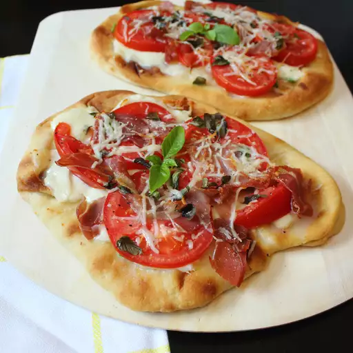

Description:
A short and Sweet recipe. This naan bread pizza recipe is one of my favorite Friday night dishes. This pizza is quick, simple, and delicious. Instead of making the pizza dough from scratch, I decided to use naan bread for the pizza base. Using naan bread saves time and is also great for portion control. The only difference between this recipe and most pizza recipes is that it doesn't include tomato sauce on the base. I don't like the sogginess that comes from the sauce but feel free to try it with the sauce, as it will still yield good results. You can find out more on Allrecipes.
Duration:
Prep Time: 15 mins Cook Time: 10 mins Total Time: 25 mins Servings: 2 Yeild: 2 pizzasIngredients:
- 2 naan breads
- ½ teaspoon black pepper
- 2 teaspoons olive oil, or as needed
- 1 green onion, sliced
- 1 clove garlic, finely chopped
- 8 slices mozzarella cheese
- 1 large roma tomato, thinly sliced
- salt and ground black pepper to taste
- 1 slice prosciutto, sliced
- 6 leaves fresh basil, roughly chopped
- 2 tablespoons grated Parmesan cheese
Steps:
- Preheat the oven to 350 degrees F (175 degrees C). Line a baking sheet with aluminum foil.
- Place naan breads on the prepared baking sheet; brush each with olive oil. Sprinkle green onion
and
garlic
over each naan. Arrange 4 slices mozzarella cheese onto each naan; top with tomato slices.
Season
tomatoes
with salt and pepper. Top tomato layers with prosciutto, basil, and Parmesan cheese.
- Bake in the preheated oven until pizza is crispy on the edges and cheese is melted, about 8 minutes. Turn on the oven's broiler and broil until cheese is lightly browned and bubbling, about 2 minutes.
-
